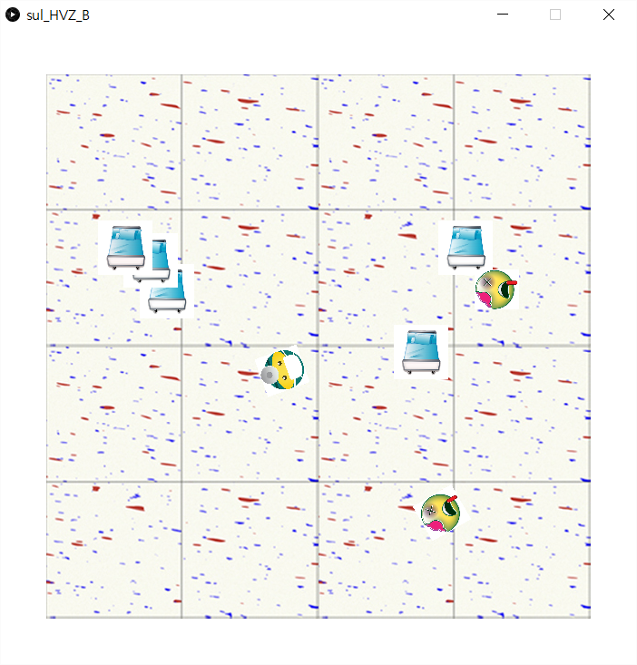
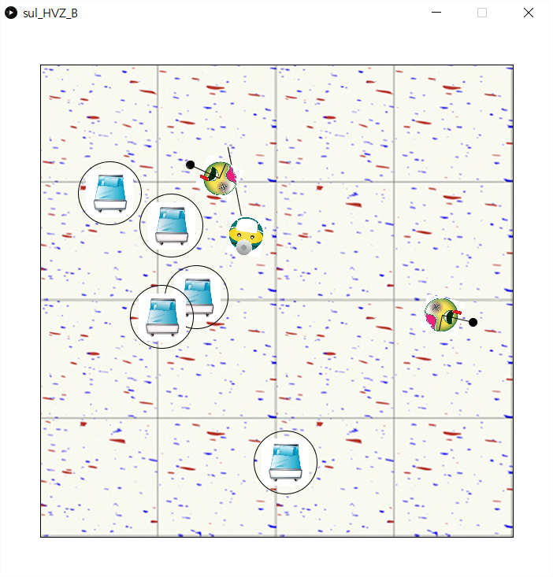
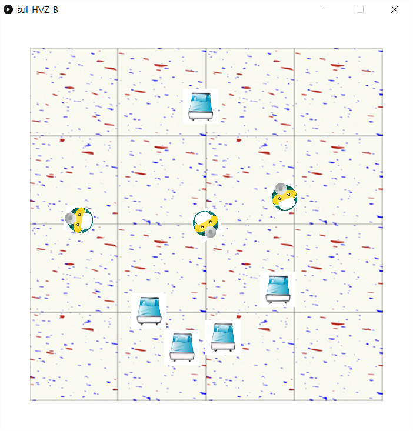

Starting HvZ
Human versus zombie simulation created in "Processing"
Instead of zombies chasing humans, like a normal HvZ, I made mine so that humans pursue zombies and cure them. I tried to make the environment look like it’s a hospital setting with beds.
- Steering behaviors
- Collision detection and resolution
- Boundaries, Environment and Obstacle avoidance
Moue right click spawns more zombies and left click spawns more humans(doctors)
Type any key in the keyboard to turn on and off debug lines
Starting HvZ